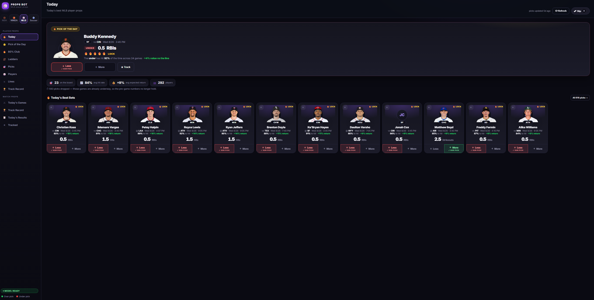

Hi, I'm Adolfo.
I'm a student at Berea College majoring in Computer Science. I like building things — security tools, small apps, and automation — and I spend most of my free time hanging out with friends and family.
Projects
BYOB C2 Web GUI
Deployed and debugged a command-and-control web application, resolving outdated Flask/Werkzeug dependency conflicts to restore full functionality. Configured cross-VM networking with VirtualBox port forwarding to establish a reverse TCP shell between a Windows target and an Ubuntu C2 server, then generated a custom Python payload to enable bot registration and session tracking through the web dashboard.
Sports Betting Analytics Platform
A multi-sport analytics platform (MLB, WNBA, and soccer) that ingests player game logs and live sportsbook odds, models per-player outcome probabilities, and publishes a daily ranked board of value bets. Built as an end-to-end pipeline — ingest, feature engineering, model, publish, grade — served by a FastAPI web app integrating four external sports-data and odds APIs.
The probability estimator shrinks per-player historical rates toward de-vigged market prices, and a calibration layer uses Wilson score confidence intervals to bar markets whose realized accuracy falls below a statistical floor. Every slate is graded against an immutable ledger written at publish time to prevent hindsight bias, and walk-forward, out-of-sample backtesting is a shipping gate. Current track record: 192–47 (80.3%) across 20 published slates.

Experience
Information Technology Support Specialist — Berea College
Provide technical support by diagnosing and resolving hardware, software, and network issues, reducing system downtime. Assist with installing, configuring, and maintaining operating systems, network components, and software applications, and collaborate with cross-functional IT teams to troubleshoot complex technical challenges.
Full details are in my resume.
Contact
The best way to reach me is by email. I'm open to interesting conversations and opportunities.